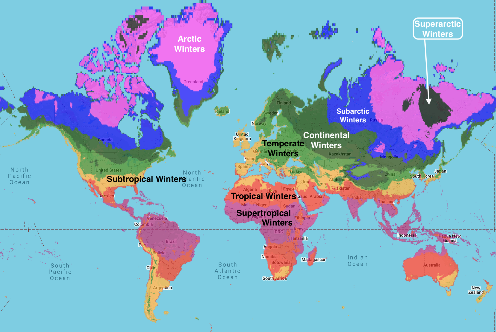
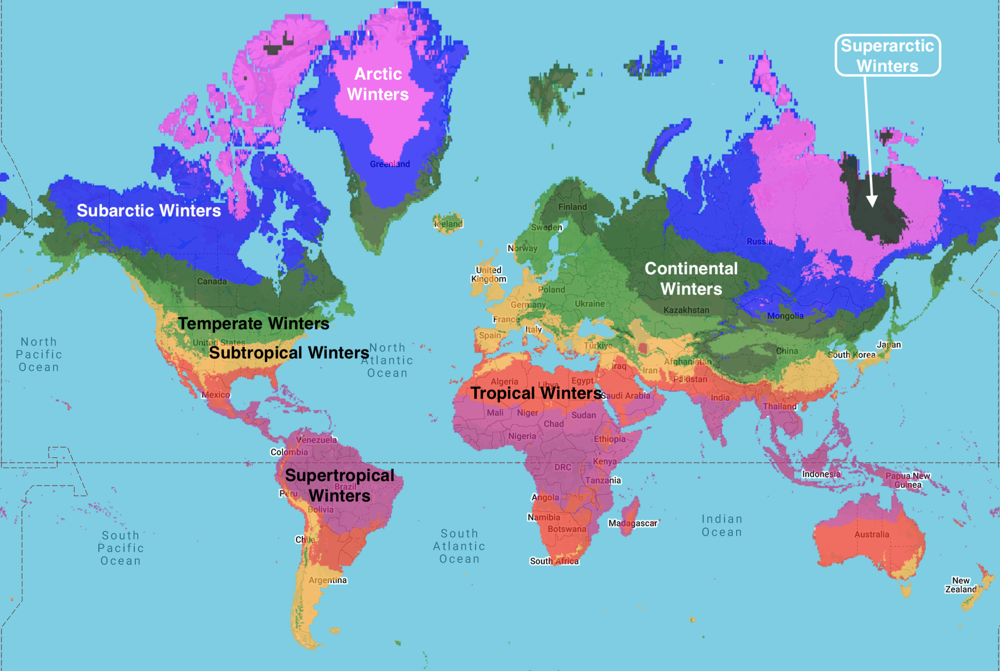

To request a map of any region, country, or state to be added to this webpage (or if you have any questions or comments), feel free to contact me at
calebisaacdickinson@gmail.com
Because of significant discrepancies between datasets covering oceans and Antarctica, and the particular difficulties involved in accurately measuring these regions,
we have limited our analysis to land-based (non-Antarctic) data.
Current oceanic and Antarctic datasets lack the accuracy necessary for the standards of this website.
Africa
Asia
Europe
North America
Canada
Alberta
Alberta — 1981 - 2010 normals

Alberta — 2011 - 2040 High Emissions normals

Alberta — 2041 - 2070 High Emissions normals

Alberta — 2071 - 2100 High Emissions normals

British Columbia
British Columbia — 1981 - 2010 normals

British Columbia — 2011 - 2040 High Emissions normals

British Columbia — 2041 - 2070 High Emissions normals

British Columbia — 2071 - 2100 High Emissions normals

Manitoba
Manitoba — 1981 - 2010 normals

Manitoba — 2011 - 2040 High Emissions normals

Manitoba — 2041 - 2070 High Emissions normals

Manitoba — 2071 - 2100 High Emissions normals

New Brunswick
New Brunswick — 1981 - 2010 normals

New Brunswick — 2011 - 2040 High Emissions normals

New Brunswick — 2041 - 2070 High Emissions normals

New Brunswick — 2071 - 2100 High Emissions normals

Newfoundland and Labrador
Newfoundland and Labrador — 1981 - 2010 normals

Newfoundland and Labrador — 2011 - 2040 High Emissions normals

Newfoundland and Labrador — 2041 - 2070 High Emissions normals

Newfoundland and Labrador — 2071 - 2100 High Emissions normals

Northwest Territories
Northwest Territories — 1981 - 2010 normals

Northwest Territories — 2011 - 2040 High Emissions normals

Northwest Territories — 2041 - 2070 High Emissions normals

Northwest Territories — 2071 - 2100 High Emissions normals

Nova Scotia
Nova Scotia — 1981 - 2010 normals

Nova Scotia — 2011 - 2040 High Emissions normals

Nova Scotia — 2041 - 2070 High Emissions normals

Nova Scotia — 2071 - 2100 High Emissions normals

Nunavut
Nunavut — 1981 - 2010 normals

Nunavut — 2011 - 2040 High Emissions normals

Nunavut — 2041 - 2070 High Emissions normals

Nunavut — 2071 - 2100 High Emissions normals

Ontario
Ontario — 1981 - 2010 normals

Ontario — 2011 - 2040 High Emissions normals

Ontario — 2041 - 2070 High Emissions normals

Ontario — 2071 - 2100 High Emissions normals

Prince Edward Island
Prince Edward Island — 1981 - 2010 normals

Prince Edward Island — 2011 - 2040 High Emissions normals

Prince Edward Island — 2041 - 2070 High Emissions normals

Prince Edward Island — 2071 - 2100 High Emissions normals

Quebec
Quebec — 1981 - 2010 normals

Quebec — 2011 - 2040 High Emissions normals

Quebec — 2041 - 2070 High Emissions normals

Quebec — 2071 - 2100 High Emissions normals

Saskatchewan
Saskatchewan — 1981 - 2010 normals

Saskatchewan — 2011 - 2040 High Emissions normals

Saskatchewan — 2041 - 2070 High Emissions normals

Saskatchewan — 2071 - 2100 High Emissions normals

Yukon
Yukon — 1981 - 2010 normals

Yukon — 2011 - 2040 High Emissions normals

Yukon — 2041 - 2070 High Emissions normals

Yukon — 2071 - 2100 High Emissions normals

United States
Alabama
Alabama — 1981 - 2010 normals

Alabama — 2011 - 2040 High Emissions normals

Alabama — 2041 - 2070 High Emissions normals

Alabama — 2071 - 2100 High Emissions normals

Alaska
Alaska — 1981 - 2010 normals

Alaska — 2011 - 2040 High Emissions normals

Alaska — 2041 - 2070 High Emissions normals

Alaska — 2071 - 2100 High Emissions normals

Arizona
Arizona — 1981 - 2010 normals

Arizona — 2011 - 2040 High Emissions normals

Arizona — 2041 - 2070 High Emissions normals

Arizona — 2071 - 2100 High Emissions normals

Arkansas
Arkansas — 1981 - 2010 normals

Arkansas — 2011 - 2040 High Emissions normals

Arkansas — 2041 - 2070 High Emissions normals

Arkansas — 2071 - 2100 High Emissions normals

California
California — 1981 - 2010 normals

California — 2011 - 2040 High Emissions normals

California — 2041 - 2070 High Emissions normals

California — 2071 - 2100 High Emissions normals

Colorado
Colorado — 1981 - 2010 normals

Colorado — 2011 - 2040 High Emissions normals

Colorado — 2041 - 2070 High Emissions normals

Colorado — 2071 - 2100 High Emissions normals

Connecticut
Connecticut — 1981 - 2010 normals

Connecticut — 2011 - 2040 High Emissions normals

Connecticut — 2041 - 2070 High Emissions normals

Connecticut — 2071 - 2100 High Emissions normals

Delaware
Delaware — 1981 - 2010 normals

Delaware — 2011 - 2040 High Emissions normals

Delaware — 2041 - 2070 High Emissions normals

Delaware — 2071 - 2100 High Emissions normals

Florida
Florida — 1981 - 2010 normals

Florida — 2011 - 2040 High Emissions normals

Florida — 2041 - 2070 High Emissions normals

Florida — 2071 - 2100 High Emissions normals

Georgia
Georgia — 1981 - 2010 normals

Georgia — 2011 - 2040 High Emissions normals

Georgia — 2041 - 2070 High Emissions normals

Georgia — 2071 - 2100 High Emissions normals

Hawaii
Hawaii — 1981 - 2010 normals

Hawaii — 2011 - 2040 High Emissions normals

Hawaii — 2041 - 2070 High Emissions normals

Hawaii — 2071 - 2100 High Emissions normals

Idaho
Idaho — 1981 - 2010 normals

Idaho — 2011 - 2040 High Emissions normals

Idaho — 2041 - 2070 High Emissions normals

Idaho — 2071 - 2100 High Emissions normals

Illinois
Illinois — 1981 - 2010 normals

Illinois — 2011 - 2040 High Emissions normals

Illinois — 2041 - 2070 High Emissions normals

Illinois — 2071 - 2100 High Emissions normals

Indiana
Indiana — 1981 - 2010 normals

Indiana — 2011 - 2040 High Emissions normals

Indiana — 2041 - 2070 High Emissions normals

Indiana — 2071 - 2100 High Emissions normals

Iowa
Iowa — 1981 - 2010 normals

Iowa — 2011 - 2040 High Emissions normals

Iowa — 2041 - 2070 High Emissions normals

Iowa — 2071 - 2100 High Emissions normals

Kansas
Kansas — 1981 - 2010 normals

Kansas — 2011 - 2040 High Emissions normals

Kansas — 2041 - 2070 High Emissions normals

Kansas — 2071 - 2100 High Emissions normals

Kentucky
Kentucky — 1981 - 2010 normals

Kentucky — 2011 - 2040 High Emissions normals

Kentucky — 2041 - 2070 High Emissions normals

Kentucky — 2071 - 2100 High Emissions normals

Louisiana
Louisiana — 1981 - 2010 normals

Louisiana — 2011 - 2040 High Emissions normals

Louisiana — 2041 - 2070 High Emissions normals

Louisiana — 2071 - 2100 High Emissions normals

Maine
Maine — 1981 - 2010 normals

Maine — 2011 - 2040 High Emissions normals

Maine — 2041 - 2070 High Emissions normals

Maine — 2071 - 2100 High Emissions normals

Maryland
Maryland — 1981 - 2010 normals

Maryland — 2011 - 2040 High Emissions normals

Maryland — 2041 - 2070 High Emissions normals

Maryland — 2071 - 2100 High Emissions normals

Massachusetts
Massachusetts — 1981 - 2010 normals

Massachusetts — 2011 - 2040 High Emissions normals

Massachusetts — 2041 - 2070 High Emissions normals

Massachusetts — 2071 - 2100 High Emissions normals

Michigan
Michigan — 1981 - 2010 normals

Michigan — 2011 - 2040 High Emissions normals

Michigan — 2041 - 2070 High Emissions normals

Michigan — 2071 - 2100 High Emissions normals

Minnesota
Minnesota — 1981 - 2010 normals

Minnesota — 2011 - 2040 High Emissions normals

Minnesota — 2041 - 2070 High Emissions normals

Minnesota — 2071 - 2100 High Emissions normals

Mississippi
Mississippi — 1981 - 2010 normals

Mississippi — 2011 - 2040 High Emissions normals

Mississippi — 2041 - 2070 High Emissions normals

Mississippi — 2071 - 2100 High Emissions normals

Missouri
Missouri — 1981 - 2010 normals

Missouri — 2011 - 2040 High Emissions normals

Missouri — 2041 - 2070 High Emissions normals

Missouri — 2071 - 2100 High Emissions normals

Montana
Montana — 1981 - 2010 normals

Montana — 2011 - 2040 High Emissions normals

Montana — 2041 - 2070 High Emissions normals

Montana — 2071 - 2100 High Emissions normals

Nebraska
Nebraska — 1981 - 2010 normals

Nebraska — 2011 - 2040 High Emissions normals

Nebraska — 2041 - 2070 High Emissions normals

Nebraska — 2071 - 2100 High Emissions normals

Nevada
Nevada — 1981 - 2010 normals

Nevada — 2011 - 2040 High Emissions normals

Nevada — 2041 - 2070 High Emissions normals

Nevada — 2071 - 2100 High Emissions normals

New Hampshire
New Hampshire — 1981 - 2010 normals

New Hampshire — 2011 - 2040 High Emissions normals

New Hampshire — 2041 - 2070 High Emissions normals

New Hampshire — 2071 - 2100 High Emissions normals

New Jersey
New Jersey — 1981 - 2010 normals

New Jersey — 2011 - 2040 High Emissions normals

New Jersey — 2041 - 2070 High Emissions normals

New Jersey — 2071 - 2100 High Emissions normals

New Mexico
New Mexico — 1981 - 2010 normals

New Mexico — 2011 - 2040 High Emissions normals

New Mexico — 2041 - 2070 High Emissions normals

New Mexico — 2071 - 2100 High Emissions normals

New York
New York — 1981 - 2010 normals

New York — 2011 - 2040 High Emissions normals

New York — 2041 - 2070 High Emissions normals

New York — 2071 - 2100 High Emissions normals

North Carolina
North Carolina — 1981 - 2010 normals

North Carolina — 2011 - 2040 High Emissions normals

North Carolina — 2041 - 2070 High Emissions normals

North Carolina — 2071 - 2100 High Emissions normals

North Dakota
North Dakota — 1981 - 2010 normals

North Dakota — 2011 - 2040 High Emissions normals

North Dakota — 2041 - 2070 High Emissions normals

North Dakota — 2071 - 2100 High Emissions normals

Ohio
Ohio — 1981 - 2010 normals

Ohio — 2011 - 2040 High Emissions normals

Ohio — 2041 - 2070 High Emissions normals

Ohio — 2071 - 2100 High Emissions normals

Oklahoma
Oklahoma — 1981 - 2010 normals

Oklahoma — 2011 - 2040 High Emissions normals

Oklahoma — 2041 - 2070 High Emissions normals

Oklahoma — 2071 - 2100 High Emissions normals

Oregon
Oregon — 1981 - 2010 normals

Oregon — 2011 - 2040 High Emissions normals

Oregon — 2041 - 2070 High Emissions normals

Oregon — 2071 - 2100 High Emissions normals

Pennsylvania
Pennsylvania — 1981 - 2010 normals

Pennsylvania — 2011 - 2040 High Emissions normals

Pennsylvania — 2041 - 2070 High Emissions normals

Pennsylvania — 2071 - 2100 High Emissions normals

Rhode Island
Rhode Island — 1981 - 2010 normals

Rhode Island — 2011 - 2040 High Emissions normals

Rhode Island — 2041 - 2070 High Emissions normals

Rhode Island — 2071 - 2100 High Emissions normals

South Carolina
South Carolina — 1981 - 2010 normals

South Carolina — 2011 - 2040 High Emissions normals

South Carolina — 2041 - 2070 High Emissions normals

South Carolina — 2071 - 2100 High Emissions normals

South Dakota
South Dakota — 1981 - 2010 normals

South Dakota — 2011 - 2040 High Emissions normals

South Dakota — 2041 - 2070 High Emissions normals

South Dakota — 2071 - 2100 High Emissions normals

Tennessee
Tennessee — 1981 - 2010 normals

Tennessee — 2011 - 2040 High Emissions normals

Tennessee — 2041 - 2070 High Emissions normals

Tennessee — 2071 - 2100 High Emissions normals

Texas
Texas — 1981 - 2010 normals

Texas — 2011 - 2040 High Emissions normals

Texas — 2041 - 2070 High Emissions normals

Texas — 2071 - 2100 High Emissions normals

Utah
Utah — 1981 - 2010 normals

Utah — 2011 - 2040 High Emissions normals

Utah — 2041 - 2070 High Emissions normals

Utah — 2071 - 2100 High Emissions normals

Vermont
Vermont — 1981 - 2010 normals

Vermont — 2011 - 2040 High Emissions normals

Vermont — 2041 - 2070 High Emissions normals

Vermont — 2071 - 2100 High Emissions normals

Virginia
Virginia — 1981 - 2010 normals

Virginia — 2011 - 2040 High Emissions normals

Virginia — 2041 - 2070 High Emissions normals

Virginia — 2071 - 2100 High Emissions normals

Washington
Washington — 1981 - 2010 normals

Washington — 2011 - 2040 High Emissions normals

Washington — 2041 - 2070 High Emissions normals

Washington — 2071 - 2100 High Emissions normals

West Virginia
West Virginia — 1981 - 2010 normals

West Virginia — 2011 - 2040 High Emissions normals

West Virginia — 2041 - 2070 High Emissions normals

West Virginia — 2071 - 2100 High Emissions normals

Wisconsin
Wisconsin — 1981 - 2010 normals

Wisconsin — 2011 - 2040 High Emissions normals

Wisconsin — 2041 - 2070 High Emissions normals

Wisconsin — 2071 - 2100 High Emissions normals

Wyoming
Wyoming — 1981 - 2010 normals

Wyoming — 2011 - 2040 High Emissions normals

Wyoming — 2041 - 2070 High Emissions normals

Wyoming — 2071 - 2100 High Emissions normals

Oceania
South America
Global Winter Maps

Global distribution of winter categories — 1961-1990 normals

Global distribution of winter categories — 2025 High Emissions scenario (business as usual)

Global distribution of winter categories — 2100 High Emissions scenario (business as usual)

USA distribution of winter categories — 1961-1990 normals

USA distribution of winter categories — 2025 High Emissions scenario (business as usual)

USA distribution of winter categories — 2100 High Emissions scenario (business as usual)

Global Aridity Maps

Please note that world aridity maps are temporarily unavailable.
Global distribution of aridity categories — 1961-1990 normals

Global distribution of aridity categories — 2025 High Emissions scenario (business as usual)

Global distribution of aridity categories — 2100 High Emissions scenario (business as usual)

USA distribution of aridity categories — 1961-1990 normals

USA distribution of aridity categories — 2025 High Emissions scenario (business as usual)

USA distribution of aridity categories — 2100 High Emissions scenario (business as usual)

Global Summer Maps

Global distribution of summer categories — 1961-1990 normals

Global distribution of summer categories — 2025 High Emissions scenario (business as usual)

Global distribution of summer categories — 2100 High Emissions scenario (business as usual)

USA distribution of summer categories — 1961-1990 normals

USA distribution of summer categories — 2025 High Emissions scenario (business as usual)

USA distribution of summer categories — 2100 High Emissions scenario (business as usual)